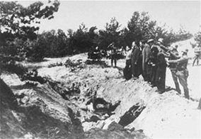

Voilà un roman qui ne se lit pas d'une traite : un pavé de 900 pages… qu'on a tout de même du mal à lâcher. Les bienveillantes, édition Gallimard, est le premier roman de Jonathan Littell, il a obtenu Le Prix Goncourt 2006.
Je ne sais pas combien de temps a mis l’auteur pour l’écrire, mais il lui a certainement fallu des années pour se procurer et parcourir l'abondante documentation qui le compose. Les bienveillantes, c'est un peu plus qu'un roman, c'est un exercice réussi : l'insertion de personnages fictifs qui côtoient des personnages réels dans un univers historique récent, celui de la dernière guerre mondiale.
Avec sa colossale documentation, l'auteur aurait pu écrire trois thèses de doctorat d'histoire : une sur le front de l'Est, une sur les structures de la SS et une dernière sur l'univers concentrationnaire.
Le livre commence en Ukraine, il nous promène un peu partout dans l’Europe en guerre, à Stalingrad où le personnage principal est gravement blessé à la tête, mais l’ouvrage nous emmène également dans des lieux paisibles comme le Cap d’Antibes ou dans des forêts plus ou moins nordiques pour se terminer dans Berlin en flammes sous le déluge de bombes.
Le personnage central est un officier, le SS Obersturmführer Maximilien Aue. Il prendra du galon au fur et à mesure de son parcours, de ses missions... Max Aue parle à la première personne en s’adressant au lecteur. Il raconte sa vie, ses envies, ses relations amicales, sa sexualité. Aue est homosexuel, ce qui, on s’en doute, ne s’harmonise pas toujours avec l’idéologie nazie. Il se travestit à l’occasion, dans la recherche d’une sœur jumelle...
Son métier de soldat est simple : exterminer les juifs d’Ukraine d’abord, avec les Einsatzgruppen, puis en Crimée, pour finir dans la méthode industrielle des camps de la mort. Le tour de force de l'ouvrage et ce n’est pas rien de le dire, c’est que le narrateur est banalement et profondément... humain ! C’est un idéaliste attachant qui nous parle de sa philosophie de l’existence. Il aime la musique, la littérature, les beaux arts… et il n'est pas le seul : nombre de ses amis SS sont aussi amoureux des arts, ils apportent des fleurs à la maîtresse de maison quand ils sont invités et pratiquent le baisemain avec les épouses de leurs collègues.
Les jardins des villas de leurs lieux de travail sont bien tenus, on y cultive des roses.
C'est là que se situe, entre autres, l'originalité de l'ouvrage : décrire le raffinement de la civilisation occidentale et le faire cohabiter avec la barbarie la plus froide, la plus inhumaine, la plus calculatrice. Et sans relâche, au cours de la lecture de cette froide barbarie, on se dit : "Non, ce n'est pas possible !" Hélas, ce le fut.
L'écriture est plaisante, elle erre dans le descriptif, les paysages sont palpables avec les doigts, les couleurs du soleil étalent une palette insoupçonnée et les odeurs lâchent leurs fragrances aux narines du lecteur. Mais cette écriture descriptive sait aussi rester sobre, autant dans un coucher de soleil que dans une scène d'atrocité, c'est peut-être la froideur descriptive qui donne un aperçu de l’horreur absolue. Dans cette sobriété crue il faut parfois s'accrocher des deux mains au bouquin pour ne pas chavirer.
Toutefois aussi riche que soit sa documentation, Jonathan Littell commet peut-être une erreur : "Un de nos Orpo, photographe amateur, avait pris plusieurs pellicules en couleurs durant les exécutions, et disposait aussi de produits pour les développer ; je lui fis réquisitionner du matériel dans une échoppe pour qu'il me prépare des tirages de ses meilleurs clichés." (page130)
La scène décrite se passe dans un bourg Ukrainien en 1941. Or, même si la première photo couleur date de 1868 :
-Le succès à grande échelle dépendait de la possibilité de tirage photographique sur papier que permet le kodacolor introduit en quantité limitée pendant la seconde Guerre Mondiale 1942 puis plus largement dans les années 1950 sous le format 135-.
Source : encyclopédie Wikipédia. De nombreux sites sur l'histoire de la photo confirment l’encyclopédie. Si la scène est plausible, aux vues des dates et des lieux, elle reste peu probable.
Un autre petit régal de fin gourmet est un lapsus calami, quand l'auteur philosophe sur le droit, car la philosophie et la réflexion ne sont pas absentes de l'ouvrage. Il écrit :
"Œdipe lorsqu'il tue son père, ne sait pas qu'il commet un parricide ; tuer sur la route un étranger qui vous a insulté, pour la conscience et les lois grecques, est une action légitime, il n'y a aucune faute ; mais cet homme c'était Laërte…" (page 545)
Or le père qu'Œdipe a tué c'est Laïos, pas Laërte, qui était lui, le père d'Ulysse ! Le lapsus est d’autant plus surprenant quand on sait que "Le mensonge d'Ulysse" est un ouvrage de la littérature révisionniste concentrationnaire, ce qui n’a pas pu échapper à l'auteur. D’autant que le titre lui-même « Les bienveillantes » est inspiré des classiques grecs, Les Euménides d’Eschyle.
Quoi qu'il en soit, ni l'improbabilité sur la photo couleur, ni ce lapsus ne font ombrage aux Bienveillantes qui réunit tous les ingrédients de la littérature moderne : des phrases simples mais percutantes, pas de fioritures inutiles, du sexe, de l'action, des interrogations crues.
La fin décrit Berlin sous les bombes et les berlinois souffrant de la famine. Les scènes sont assez réalistes et comme dans toute ville affamée, le zoo devient une source d’approvisionnement alimentaire.
À la fin du roman, Max Aue tue son meilleur ami, celui qui lui fut le plus fidèle. Il y a également une scène de grosse farce, inutile et grotesque, lorsque Aue pince le nez d’Hitler.
L’ouvrage se lit avec facilité tout en nous faisant ressentir un certain malaise, c’était le but, il est atteint.
Partager cette page